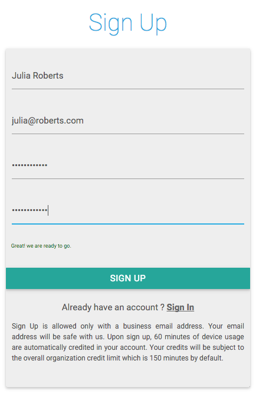

2. Getting Started¶
Accessing RobusTest
Users can start using RobusTest by signing up at http://robustest.com
Enterprise users can also have an on-premise instance of RobusTest installed. For more information on our enterprise offering, do write in to us at hello@robustest.com
If you are using the public instance at http://robustest.com, you can easily create a trial account for yourself from the Sign Up page. Please note that you can sign up on the public platform only with a business email address. A trial account has 60 minutes of device usage credits. Your account is associated with your organization based on your email address domain name. Note that in case of trial accounts, there is an overall cap of 180 minutes on the organization. This cap is not applicable in case of paid accounts.

On Sign Up, you will need to confirm your account.
In an on-premise enterprise instance, the process of signing up may differ e.g. in case of SSO integration, you can just login using your existing credentials. You can get more details from the administrator for your enterprise installation.